Background
Trelliscope provides a way to visualize large, complex data in great detail from within the R statistical programming environment. This package operates on data that has been split into subsets using the datadr package. Data can be local R data objects or can be very large data sets supported by the RHIPE backend of datadr.
Trelliscope is based on the concept of Divide and Recombine (D&R). Some philosophy and background on D&R can be found at datadr.org.
Reference
Related projects:
- datadr: R package providing the D&R framework
- RHIPE: the engine that enables D&R to work with large, complex data
References:
Getting Started
Trelliscope is a part of and depends on datadr. It is recommended to spend some time in the datadr tutorial to get acquainted with the package. Mainly focusing on the division aspects and the backend options of the package will suffice, although it is recommended to get well-acquainted with the entire package, as Trelliscope is simply a visualization component in the D&R analysis paradigm.
Installation
To install Trelliscope, we must first install datadr, which is discussed here.
Then, to install Trelliscope:
library(devtools)
install_github("trelliscope", "tesseradata")
Then we load the package:
library(trelliscope)
Loading required package: datadr
Loading required package: parallel
Loading required package: lattice
Loading required package: ggplot2
and we are ready to go.
Connecting to a Visualization Database (VDB)
Collections of Trelliscope and other displays created throughout the course of an analysis are organized into a visualization database (VDB) for the project. Displays can be organized into groups by analysis thread.
The first step to using Trelliscope for an analysis project is to connect to a VDB. A VDB connection is simply a connection to a directory on disk where all of the VDB files reside or will reside.
# initialize a connection to a new VDB to be located at /private/tmp/vdbtest
vdbDir <- file.path(tempdir(), "vdbtest")
conn <- vdbConn(vdbDir, autoYes = TRUE, name = "myProject")
If the VDB connection directory doesn't exist, it will ask whether it should be created. Here, we specify autoYes=TRUE to automatically answer yes to this question. In any subsequent R session, we can connect to the existing VDB directory with the same vdbConn() command.
Most Trelliscope functions need the VDB connection information to know where to put things. It can be tedious to always supply this, so vdbConn() sets a global R option called "vdbConn" that store the connection information. If in a Trelliscope function we do not explicitly specify the connection, the default is to search for the global vdbConn option. The assumption is that in any one R session, the user will be using just one VDB, and thus there will not be multiple conflicting connections.
We can now look at some examples and start populating the VDB with displays.
Trellis Display
In this section, we will explore an example dataset using the lattice package, which is based on Trellis Display, upon which many of the principles of Trelliscope are built. Note that lattice is not required for plotting in Trelliscope - you can use ggplot2, base R graphics, or potentially any other plotting mechanism that can be rendered in a web page.
airplane data
The Trelliscope package includes a dataset called airplane which we will use as an example dataset in this tutorial. This data is very small and can be analyzed quite easily without the help of trelliscope, but we use it to demonstrate the functionality. Bear in mind that the same tools apply to much larger data.
Let's first get a feel for the data:
data(airplane)
head(airplane)
dat_ams org NO3 SO4 NH4 CHL org_err NO3_err
1 2010-06-28 16:25:21 9.263 0.4490 0.1149 0.1256 0.011193 0.1108 0.01721
2 2010-06-28 16:25:34 13.288 0.5890 0.1925 0.2286 0.017478 0.1165 0.01809
3 2010-06-28 16:25:46 12.134 0.5356 0.2323 0.2240 0.006066 0.1161 0.01768
4 2010-06-28 16:25:59 12.357 0.5700 0.3070 0.1785 0.033465 0.1164 0.01820
5 2010-06-28 16:26:12 10.112 0.4567 0.1975 0.1718 0.006830 0.1146 0.01746
6 2010-06-28 16:26:24 7.493 0.2889 0.2048 0.1078 0.036566 0.1116 0.01657
SO4_err NH4_err CHl_err latitude longitude altitude static_p altitude_p
1 0.02220 0.03308 0.01238 38.73 -121.4 353.6 967.7 327.2
2 0.02444 0.03305 0.01217 38.73 -121.3 368.7 966.1 340.8
3 0.02517 0.03307 0.01231 38.74 -121.3 384.7 964.3 356.4
4 0.02533 0.03322 0.01227 38.74 -121.3 393.2 963.4 364.9
5 0.02503 0.03313 0.01225 38.75 -121.3 388.1 963.9 360.0
6 0.02412 0.03303 0.01193 38.75 -121.3 379.5 964.8 352.0
static_t potential_t dewpt RH h2o_MF windspd winddir cpc_3025
1 28.43 31.34 14.13 41.64 10.544 3.45 329.8 5508
2 28.66 31.66 13.50 39.34 10.114 3.90 325.0 3915
3 28.60 31.72 13.38 39.28 10.054 4.14 320.2 4037
4 28.51 31.71 12.94 38.48 9.796 4.12 317.8 3969
5 28.80 31.98 11.10 33.50 8.680 4.70 317.4 3567
6 28.84 31.94 11.50 34.18 8.872 4.54 316.6 2940
cpc_3010 ozone co so2 no no2 noy mz_33 mz_42 mz_45 mz_59
1 482.8 46.79 109.7 NA 0.3074 1.7454 5.245 16.73 0.10241 5.985 8.495
2 352.4 44.28 97.6 NA 0.0514 0.3584 3.476 14.58 0.11756 5.216 7.713
3 364.4 45.18 101.2 NA 0.1456 0.5726 4.092 14.42 0.13327 5.188 6.852
4 348.0 45.50 103.1 NA 0.1593 0.6876 4.024 14.08 0.09164 4.843 7.080
5 314.0 40.42 91.8 NA 0.1150 0.8004 3.528 11.14 0.04075 5.075 6.459
6 263.2 40.14 87.8 NA 0.0354 0.3476 3.045 10.69 0.05883 4.171 4.851
mz_69 mz_71 mz_79 mz_93 mz_107 mz_137 mz_43 mz_61 mz_87 mz69_71
1 1.5888 3.880 0.4166 0.4464 0.6861 0.51914 8.521 5.386 0.3025 5.469
2 0.8105 3.654 0.2426 0.5712 0.8691 0.45182 8.299 5.125 0.2352 4.464
3 0.7905 3.345 0.1917 0.4538 0.6606 0.09299 8.169 5.097 0.4179 4.136
4 0.9043 2.939 0.2614 0.2178 0.7805 0.35259 8.377 5.169 0.2983 3.843
5 0.9109 2.744 0.1778 0.1849 0.2648 0.34773 6.872 4.961 0.3636 3.655
6 1.1104 1.878 0.1725 0.1533 0.8381 0.16363 7.049 4.566 0.2459 2.988
leg_flag nox
1 13 2.0528
2 13 0.4098
3 13 0.7182
4 13 0.8469
5 3 0.9154
6 3 0.3830
We see a date/time variable, latitude, longitude, altitude, and several measurements. Here we will focus on the measurement of co.
co vs. time
Let's take a look at co vs. time:
# look at co vs. time
Sys.setenv(TZ="UTC")
xyplot(co ~ dat_ams, data = airplane, aspect = 0.2)
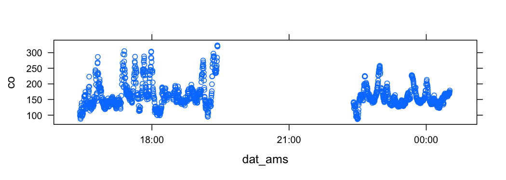
This plots co vs. dat_ams, and gives the plot an aspect ratio of 0.2. Note that aspect ratios are very important for visual perception and should not be an afterthought or not thought of at all when creating a display.
It looks like there are several co measurements over the course of a day, split into two chunks with a 4-5 hour gap in between. It turns out that there are two separate flights - one in the morning and one in the afternoon.
To account for this in our analyses, let's create a new variable flight with values "am" and "pm":
# distinguish "am" and "pm" flights
midTime <- as.POSIXct("2010-06-28 21:00:00 UTC")
airplane$flight <- ifelse(airplane$dat_ams < midTime, "am", "pm")
Altitude vs. time
Another interesting variable is altitude. If we look at altitude vs. time:
# look at altitude vs. time
xyplot(altitude ~ dat_ams, data = airplane, aspect = 0.2)
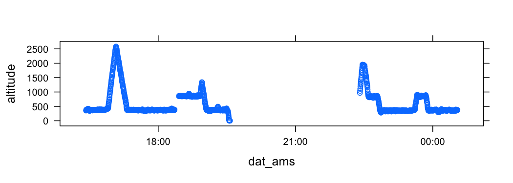
We see that altitude typically stays fairly constant a little under 500 and 1000, with some interesting quick ascents to higher altitudes. It may be interesting to investigate different altitude levels, and we can create a discretized altitude variable:
# create a discrete version of altitude
airplane$altCut <- cut(airplane$altitude, seq(0, 3000, by = 500))
Flight tracks
We can get a feel for the flight tracks during each flight with the following:
# take a look at airplane tracks
xyplot(latitude ~ longitude, data = airplane,
groups = flight,
aspect = "iso",
alpha = 0.5,
auto.key = list(space = "right")
)

The groups argument tells lattice to use a different color to plot data corresponding to each flight. aspect="iso" forces the aspect ratio of the plot to be such that the units of the x and y axis are equal according to the physical screen space they cover relative to their units.
Adding altitude
Suppose we want to incorporate altitude into the tracks plot. There are several ways we could do this. Here, for each flight we plot the tracks colored differently for each level of altitude.
# look at tracks with altitude and flight
library(RColorBrewer)
xyplot(latitude ~ longitude | flight,
data = airplane,
panel = function(x, y, ...) {
panel.fill("#E0E0E0")
panel.grid(h = -1, v = -1, col = "lightgray")
panel.xyplot(x, y, ...)
},
groups = altCut,
between = list(x = 0.5),
aspect = "iso",
par.settings = list(superpose.symbol = list(col = brewer.pal(6, "Accent"))),
auto.key = list(space = "right")
)
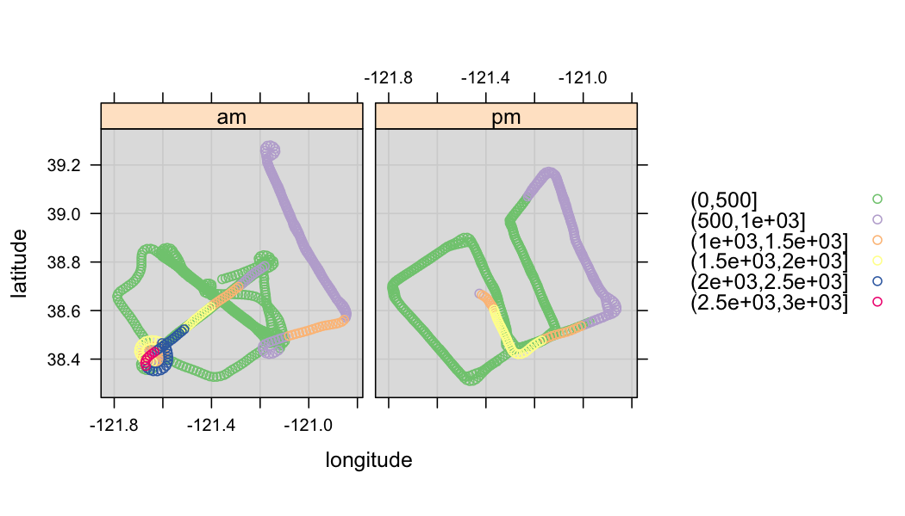
This display introduces several more elements of Trellis Display. The most important is conditioning, or faceting on the variable flight. In the R formula interface, this is specified by the | operator. This causes a panel to be rendered independently for each subset defined by the levels of flight.
Another notion introduced in this example is that of a panel function. The panel function provides instructions for what to plot for each panel in the display, and the input to the panel function is a subset of data as specified by the conditioning variables. The default panel function for xyplot() is panel.xyplot(). Here, we use that, but additionally fill the background of each panel and add grid lines (which can also be done by specifying type=c("p", "g")).
Other aspects introduced here include the key, specified by auto.key, and special settings for the color of the symbols, specified by par.settings. There are several aspects of Trellis Display as implemented in the lattice package that we encourage you to look into on your own, starting here.
More on conditioning
As conditioning is the basis of Trelliscope display, we'll cover a few more examples of conditioning, paying particular attention the importance of axis limits for being able to make meaningful judgements of similarities or differences between panels.
Let's take a look at the airplane tracks broken up by time. First, we will create a new factor variable that groups time by 15 minute intervals:
# break time into 15 minute intervals
airplane$datCut <- sprintf("%s:%02d",
format(airplane$dat_ams, "%m-%d/%H"),
floor(as.integer(format(airplane$dat_ams, "%M")) / 15) * 15
)
One way we might view the data conditioned on this new time variable is to plot a directional arrow of the flight's path per time interval:
# plot of airplane tracks by 15 minute intervals
arrowPanel <- function(x, y, ...) {
n <- length(x)
panel.grid(h = -1, v = -1)
panel.arrows(x[1:(n-1)], y[1:(n-1)], x[2:n], y[2:n],
length = 0.05, alpha = 0.3, col = "blue")
}
xyplot(latitude ~ longitude | datCut,
data = airplane,
panel = arrowPanel,
as.table = TRUE,
between = list(x = 0.25, y = 0.25),
layout = c(5, 2),
aspect = "iso",
subset = flight == "pm"
)
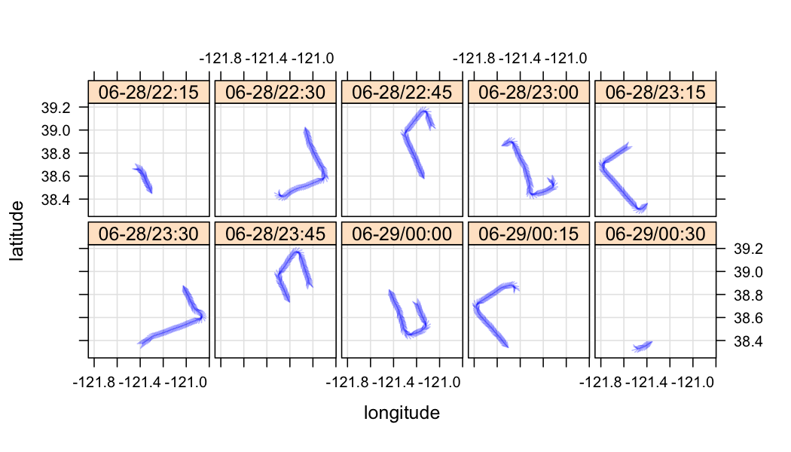
Scales / axis limits
Using this example, an important issue to discuss with Trellis Display is that of scales. When viewing panels of a Trellis display, meaningful visual comparisons between panels greatly depend on how the limits of the x and y axes are determined. There are three choices for each axis:
- "same": the same limits are used for all the panels
- "free": the limits for each panel are determined by just the points in that panel
- "sliced": the length (max - min) of the scales are constrained to remain the same across panels
Determining suitable axis limits is dependent on what is being visualized, but typically "same" or "sliced" are good choices as they enable panel-to-panel comparisons, which is where much of the power of this type of visualization lies. You might choose "sliced" if you are interested in relative behaviors in terms of scale, or "same" if you are interested in relative behaviors both in terms of location and scale.
The handling of panel axis limits is specified by the scales argument, which takes a names list of lists with names x and y for the x and y axes respectively. There are several options to specify for each axis scale, but relation specifies the axis limit behavior.
The default in lattice is "same", and we have seen an example of this in our previous plot. Let's also look at the other options.
Free axes
Here is the same plot as before but with both axes "free":
# example of both x and y axes "free"
xyplot(latitude ~ longitude | datCut,
data = airplane,
panel = arrowPanel,
as.table = TRUE,
between = list(x = 0.25, y = 0.25),
layout = c(5, 2),
scales = list(x = list(relation = "free"),
y = list(relation="free")),
subset = flight == "pm"
)
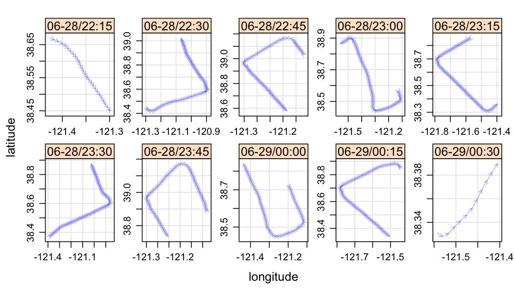
It is quite difficult to understand how things vary between panels in this plot.
Sliced axes
Here is the plot with both axes "sliced":
# example of both x and y axes "sliced"
xyplot(latitude ~ longitude | datCut,
data = airplane,
panel = arrowPanel,
as.table = TRUE,
between = list(x = 0.25, y = 0.25),
layout = c(5, 2),
scales = list(x = list(relation = "sliced"),
y = list(relation="sliced")),
subset = flight == "pm"
)
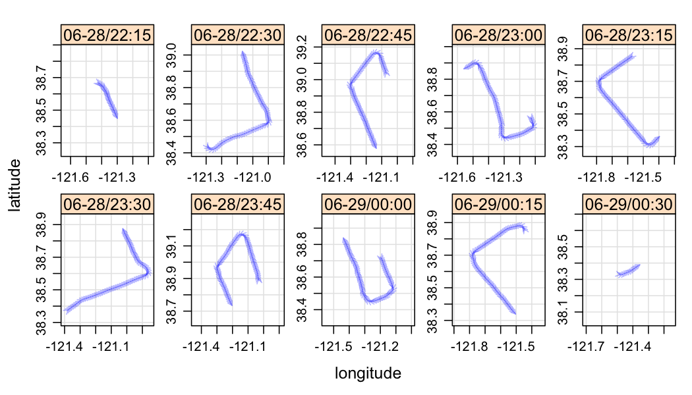
Now we can make relative judgements between panels, but it is difficult to judge the magnitude of shifts in location from one panel to the other.
The prepanel function
One more notion to introduce in Trellis Display that will translate over to Trelliscope is that of a prepanel function. A prepanel function can be used to determine the individual panel x and y axis data ranges from which the "same", "free", or "sliced" axis computations will be based.
For example, suppose you are introducing other visual artifact to your panels other than the original data being plotted, and you would like to make sure that the axis limits account for the possibility of these extending beyond the range of the data being plotted.
Here is an example of using a prepanel function to specify that the axis limits should extend beyond the range of both the x and y-axis variables by 1 unit in each direction. The prepanel function, like the panel function, takes the current x and y variables and must return a list that includes xlim and ylim which specify the axis limit range for each panel.
# prepanel example
xyplot(latitude ~ longitude | datCut,
data = airplane,
panel = arrowPanel,
prepanel = function(x, y) {
list(xlim = range(x) + c(-1, 1), ylim = range(y) + c(-1, 1))
},
as.table = TRUE,
between = list(x = 0.25, y = 0.25),
layout = c(5, 2),
scales = list(x = list(relation = "free"),
y = list(relation="free")),
subset = flight == "pm"
)
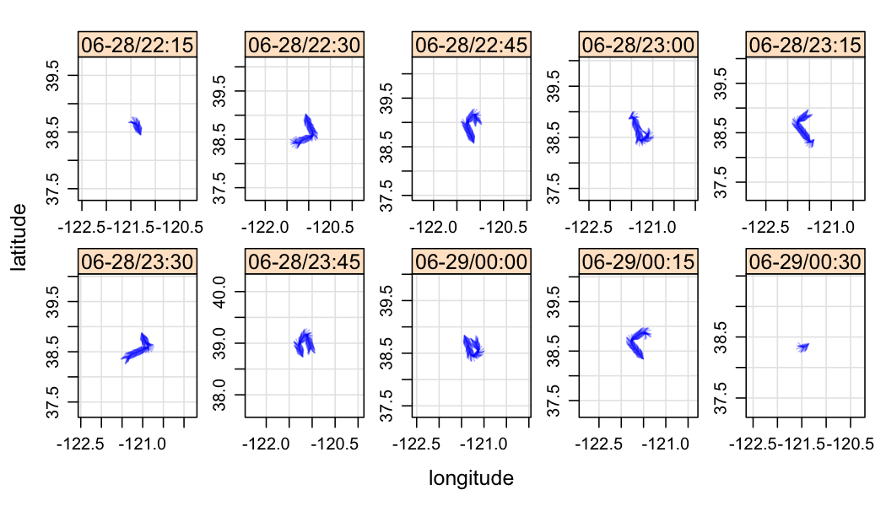
Visualization Databases
Throughout the course of an analysis, we create several visual displays, such as those seen so far. To help both keep track of what has been done and communicate our work to others, we can organize our displays in a visualization database (VDB).
In Trelliscope, a VDB is a collection of display objects that can either be simple plots created from various R plotting packages, like the ones we have seen so far, or Trelliscope displays, which are displays created for a divided dataset with a potentially very large number of subsets. This type of display is discussed in detail in the Trelliscope Displays section. Trelliscope provides a way to view and interact with these displays, as well as easily embed them in a web notebook, which we discuss in the Viewing Displays and Lab Notebooks sections.
Here, we will get introduced to a few of the commands for interacting with a VDB using Trelliscope.
Connecting to a VDB
We have already initialized a VDB. If we are in a new R session, we can re-connect to the VDB with the following:
# re-connect to our VDB
conn <- vdbConn(file.path(tempdir(), "vdbtest"))
The other information about the VDB connection (such as its name) have been stored and are read in. If you would like to reset a VDB connection's settings (such as for changing the VDB name), you can add reset = TRUE to the call.
Recall that vdbConn() sets a global option with the connection information such that all methods have access to this information without explicitly supplying the connection object all the time.
Adding a display to a VDB
Plots created with R packages lattice or ggplot2, as well as with any R expression that plots to a graphics device, can be added to a VDB with the function addDisplay(). We will cover that here, and in the next section we will see how to create and add Trelliscope displays to a VDB.
Say that we would like to add one of our plots we have created so far to our VDB:
# add a lattice plot to our VDB
p <- xyplot(latitude ~ longitude | flight,
data = airplane,
panel = function(x, y, ...) {
panel.fill("#E0E0E0")
panel.grid(h = -1, v = -1, col = "lightgray")
panel.xyplot(x, y, ...)
},
groups = altCut,
between = list(x = 0.5),
aspect = "iso",
par.settings = list(superpose.symbol =
list(col = brewer.pal(6, "Accent"))),
auto.key = list(space = "right"))
addDisplay(p,
name = "tracks_byflight",
group = "exploratory",
desc = "The tracks of the airplane with a panel for each of the morning and evening flights. Color by altitude of plane.",
width = 800, height = 450)
There are three attributes we can specify to describe a display record being added to the VDB:
name: the name of the displaygroup: the group the display belongs to (default is"common")desc: a description of the display
It is sufficient to just specify name, but specifying group is also recommended and is used to help organize plots by different aspects of the analysis. It is also a good practice to provide a detailed description of the plot.
The dim argument is a list specifying the width and height of the resulting plot (in pixels), and the resolution of the raster image that will be created.
Adding displays to our VDB helps us document our displays in line with our analyses. This makes the process of dissemination much easier, as we will see. In the course of analysis, we can create many ineffective displays in our quest to understand the data. But the displays that are insightful deserve the extra care of being documented and added to the VDB.
What a display looks like in the VDB
So what is actually happening when we create a display? Trelliscope creates a directory for the display in the VDB directory and fills it with various pieces of metadata. It also can hold the actual rendered panels, as is the case here.
Let's see what got created for this display:
# list the files in the "displays" directory of the VDB
list.files(file.path(vdbDir, "displays"))
[1] "_displayList.Rdata" "exploratory"
We see a file _displayList.Rdata, which is an object containing the grand list of all displays, as well as various pieces of metadata about the displays. The other file, "exploratory" is a directory that corresponds to the group that our newly created display belongs to. Any display with group "exploratory" will be put here.
# list the files in the "exploratory" group
list.files(file.path(vdbDir, "displays", "exploratory"))
[1] "tracks_byflight"
We see a directory for our display, tracks_byflight in here. Let's see what is in this directory:
# look at files in the "tracks_byflight" directory
list.files(file.path(vdbDir, "displays", "exploratory", "tracks_byflight"))
[1] "displayObj.Rdata" "thumb.png"
There are two files:
displayObj.Rdatais an R data object with all of the parameters that went in to creating the displaythumb.pngis the rendered display
For Trelliscope displays, thumb.png is the rendering of one subset of the data. There will also be a subdirectory, panels, which is a directory either containing the data against which the display is applied, or a collection of rendered panels.
Listing all displays
To see what displays have been created in a VDB, we can do the following:
# list all displays in the VDB
listDisplays()
name | group | desc | n | dataClass
----------------+-------------+-------------------------+---+--------------
tracks_byflight | exploratory | The tracks of the ai... | 1 | none (R plot)
This provides some simple information about each display in the VDB. The column n is the number of panels in the display, and the column dataClass indicates the connection type of the data from which the display was created (used for Trelliscope displays).
Viewing displays
We can view a display with the following:
# view the tracks_by_flight display
view("tracks_byflight")
There is a much more interesting viewer for Trelliscope displays.
Removing displays
It is possible to overwrite a display, in which case the directory of the display being replaced is renamed with a "_bak" appended to its name.
However, we may want to completely remove a display from our VDB. We can do this with:
removeDisplay("tracks_byflight")
While a display is uniquely identified by its name and group, we can get away with just specifying a name if it is unique.
Division with datadr
Trelliscope is an extension of Trellis Display that allows you to create displays with potentially thousands to millions of panels. It provides a mechanism to create and interact with these displays.
Conditioning in Trelliscope is achieved by dividing the data into subsets, one subset for each panel. Trelliscope uses the division mechanism of the Divide & Recombine (D&R) package, datadr. It is assumed that you have already gone through the datadr tutorial. Essentially, Trelliscope provides visual recombination methods for D&R.
Geographical division of airplane data
There are many ways we might want to split the data, depending on the purpose of our analysis. One aspect of the airplane data that we are interested in is how different variables, such as co change over the course of a day in different geographical locations.
Looking at our previous plots of the airplane tracks, we notice that within each square defined by the grid lines the airplane recovers many of its tracks from AM to PM:
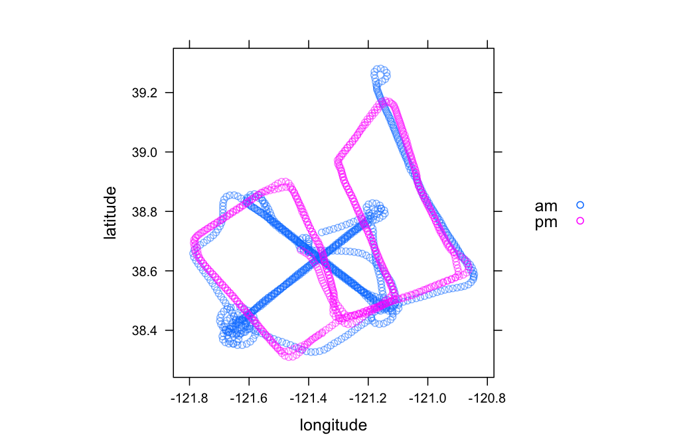
Thus, it might be interesting to split the data into subsets by cutting the latitude and longitude into small squares (okay, so these aren't really squares), and then study the variables of interest within those squares. We can do this with the following:
# latitude and longitude "square" boundaries
latCuts <- seq(38.2, 39.4, by=0.1)
lonCuts <- seq(-121.8, -120.8, by=0.1)
# make airplane a ddf
airplaneDdf <- ddf(airplane)
# add variables latCut and lonCut to airplane
airplaneLL <- addTransform(airplaneDdf, function(x) {
x$latCut <- cut(x$latitude, latCuts)
x$lonCut <- cut(x$longitude, lonCuts)
x
})
# divide the data by lat / lon
byLatLon <- divide(airplaneLL, by=c("latCut", "lonCut"),
update=TRUE)
Note that with this small dataset, we could have appended the latCuts and lonCuts variables to the airplane data frame prior to calling divide().
Let's look at the resulting distributed data frame ("ddf") object:
# look at the resulting object
byLatLon
Distributed data frame backed by 'kvMemory' connection
attribute | value
----------------+-----------------------------------------------------------
names | dat_ams(POS), org(POS), NO3(num), SO4(num), and 46 more
nrow | 1479
size (stored) | 1003.68 KB
size (object) | 1003.68 KB
# subsets | 54
* Other attributes: getKeys(), splitSizeDistn(), splitRowDistn(), summary()
* Conditioning variables: latCut, lonCut
Also, let's look at a key-value pair to make sure it looks how we think it should:
# see what a subset key-value pair looks like
byLatLon[[1]]
$key
[1] "latCut=(38.3,38.4]|lonCut=(-121.3,-121.2]"
$value
dat_ams org NO3 SO4 NH4 CHL org_err NO3_err
1 2010-06-28 18:19:35 13.29 0.8401 0.7205 0.3719 0.009054 0.1214 0.01999
2 2010-06-28 18:19:48 13.30 0.8263 0.6418 0.3653 0.037849 0.1217 0.01969
3 2010-06-28 18:20:00 13.28 0.7154 0.6786 0.3356 0.013103 0.1219 0.01920
4 2010-06-28 18:20:13 15.15 1.1202 0.9048 0.4539 0.020750 0.1240 0.02146
SO4_err NH4_err CHl_err latitude longitude altitude static_p altitude_p
1 0.03384 0.03629 0.01250 38.37 -121.3 364.5 966.4 339.0
2 0.03284 0.03632 0.01226 38.38 -121.3 377.3 964.9 351.4
3 0.03274 0.03643 0.01217 38.39 -121.3 399.7 962.4 373.0
4 0.03389 0.03658 0.01218 38.39 -121.3 378.8 964.8 351.8
static_t potential_t dewpt RH h2o_MF windspd winddir cpc_3025
1 28.40 31.35 14.25 42.10 10.64 1.25 311.29 50563
2 28.08 31.14 14.50 43.56 10.82 1.30 331.23 33147
3 27.90 31.20 15.60 47.20 11.67 0.40 13.56 58963
4 28.39 31.46 15.35 45.18 11.43 1.01 318.71 62464
cpc_3010 ozone co so2 no no2 noy mz_33 mz_42 mz_45 mz_59
1 3500 50.45 154.5 2.735 0.3825 2.200 7.450 16.61 0.06361 4.701 5.584
2 2350 53.56 149.2 1.992 0.3034 1.233 6.936 14.60 -0.02065 3.987 5.358
3 4369 60.00 NA 2.980 NA NA NA 14.30 0.07605 4.426 6.300
4 4606 60.37 NA 3.179 NA NA NA 16.04 0.07861 4.137 6.066
mz_69 mz_71 mz_79 mz_93 mz_107 mz_137 mz_43 mz_61 mz_87
1 0.3564 1.263 0.092474 0.243937 0.2209 0.229548 4.951 2.940 0.3960
2 0.6360 1.335 0.009852 0.004963 0.2840 0.192106 4.152 2.911 0.2829
3 0.5267 1.053 0.214906 0.191094 0.4131 0.194156 4.559 2.953 0.2719
4 0.3577 1.121 0.081007 0.176582 0.4669 0.001657 4.363 2.700 0.3743
mz69_71 leg_flag nox flight altCut datCut
1 1.620 6 2.583 am (0,500] 06-28/18:15
2 1.971 6 1.536 am (0,500] 06-28/18:15
3 1.580 6 NA am (0,500] 06-28/18:15
4 1.479 6 NA am (0,500] 06-28/18:15
We have our division. Now we are ready to make some displays.
A Bare Bones Display
To quickly get our feet wet with creating a display, we start with a minimal example. Creating a plot first requires the specification of what you would like to be plotted for each subset. Just like with lattice, you create a panel function that will be applied to each subset. The function is applied to each key-value pair subset in your data. This function behaves like all other per-subset functions in datadr, which can operate either on both a key and a value of just the value (see here for more details).
Some things to know about the panel function:
- The panel function is applied to each subset of your divided data object
- The panel function returns something that can be printed to a graphics device or can be rendered in a web page (for example, we have experimantal support for
ggvisand plan to supportrChartssoon) - Those familiar with lattice can think of the panel function as the lattice panel function and the data argument(s) as the lattice packet being plotted (except that you conveniently get the whole data structure instead of just
xandy) - Although we have been referring to lattice and have been showing examples with lattice, you do not need to use lattice in your panel function -- you can use base R graphics, lattice, or ggplot2, etc.
- However, using something like lattice or ggplot2 adds benefit because these create objects which can be inspected to pull out axis limits, etc. (see our discussion of
prepanelfunctions later on)
Panel function for co vs. time
Suppose we want to do a simple time series plot of the log of co vs. time for each geographical block, and we want to add a fitted line to the data. Using lattice to create the panel function, we can do this with the following:
# a simple panel function for a trelliscope display
coPanelFn <- function(d) {
xyplot(log2(co) ~ dat_ams, data=d,
type=c("p", "g"),
panel=function(x, y, ...) {
panel.xyplot(x, y, ...)
try(panel.lmline(x, y, lty=2), silent=TRUE)
})
}
The argument d (you can call it whatever you like) is the value of one of the subsets of your divided data set. Let's test it on a subset of our data:
# apply the panel function to a subset
coPanelFn(byLatLon[[2]]$value)
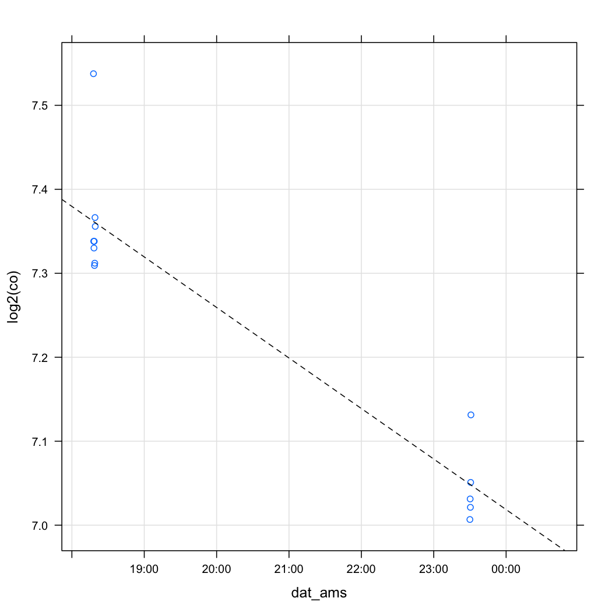
Making the display
To create a display, applying this panel function over the entire data set, we simply call makeDisplay():
# create a simple display
makeDisplay(byLatLon,
panelFn = coPanelFn,
name = "co_vs_time_bb",
group = "co",
desc = "Bare bones display of co vs. time for each geographic 'square' with fitted linear model"
)
Error: numbers of columns of arguments do not match
The two most important arguments are the first argument, data, and the panel function, panelFn. The other arguments in this example simply identify the display, as we saw previously. We will later see other arguments to makeDisplay() that provide additional useful functionality.
Here, we are putting the display in a group "co" since that is the variable we are currently studying.
Viewing the display
To view the display:
# open the Trelliscope viewer for the VDB
view()
This will bring up the Trelliscope viewer. You will get a list of displays to choose from (at this point, just one).
Later we will cover how to sync a local VDB with a web server.
We'll also talk more about how to use the viewer later, but feel free to play around.
Now, let's do something that shows all of the other functionality of makeDisplay(), including prepanel functions, cognostics, etc.
Axis Limits
As we discussed before, scales and axis limits are very important for creating meaningful Trellis displays. In Trellis Display, axis limits can be computed by specifying the x and y axes as "free", "sliced", or "same". Based on the specification, each subset is checked against what is being plotted, and the axis limits are computed. The same can be done for Trelliscope displays. There are different ways to do this that we will cover in this section.
In the display we just created, we see that the axis limits of the panels appear to be "free". This is different from the lattice default of axis limits across panels being "same". Since Trelliscope is very general -- any R plotting technology can potentially be used in a panel function -- the default is to not try to do anything with axis limits.
Note: the discussion in this section is constrained to two-dimensional panels (with x and y axes), which covers the vast majority of useful statistical visualization techniques. If you have panel functions that produce plots that do not fit this (e.g. pie charts -- no!!), then the functionality described in this section is not useful.
Simple axis limits example
# setting axis limits in the call to makeDisplay()
makeDisplay(byLatLon,
name = "co_vs_time_same",
group = "co",
desc = "Plot of co vs. time for each geographic 'square' with with fitted line, illustrating the use of 'same' axis limits for x and y",
panelFn = coPanelFn,
lims = list(x="same", y="same")
)
* Validating 'panelFn'...
* Testing cognostics function on a subset ... ok
* Precomputed limits not supplied. Computing axis limits...
Testing 'prepanelFn' on a subset...
Using 'trellis' panelFn to determine limits... dx and dy will not be computed.
At least one of the variables is not numeric. Casting as numeric for quantile calculation purposes.
* Updating displayList...
Error: numbers of columns of arguments do not match
This approach only works with lattice and ggplot2 panel functions. Per-panel axis limits are precomputed using the panel function and these are incorporated into the axis limits calculation to be applied to all panels. The reason we are constrained to lattice and ggplot2 is that Trelliscope needs to know the limits of what is being plotted in each panel to determine the overall axis limits, and these can be easily extracted from the resulting object after applying the panel function to a subset.
Here is an example of this display, using ggplot2:
# same display but using ggplot2
ggCoPanelFn <- function(x) {
qplot(dat_ams, log2(co), data=x)
}
makeDisplay(byLatLon,
name = "co_vs_time_gg",
group = "co",
desc = "Plot of co vs. time for each geographic 'square' with with fitted line, illustrating the use of 'same' axis limits for x and y, and using ggplot2",
panelFn = ggCoPanelFn,
lims = list(x="same", y="same")
)
Error: numbers of columns of arguments do not match
Note: ggplot2 support at the moment is pretty shaky. For the general continuous axis scales, it should work fine, but more work needs to be done to integrate nicely.
Specifying a prepanel function
The previous example is the most simple way to specify axis limits. However, it comes with a potential cost -- the panel function must be applied to each subset in order to obtain the limits. For panel functions that take some time to render, this is wasted time.
As an alternative, we can explicitly supply a prepanel function to the lims argument list, called prepanelFn. This functions in the same way as for lattice, where the prepanel function takes each subset of data and returns a list with xlim and ylim. For example:
# using a prepanel function to compute axis limits
preFn <- function(x) {
list(ylim=range(log2(x$co)), xlim=range(x$dat_ams))
}
makeDisplay(byLatLon,
name = "co_vs_time_pre",
group = "co",
desc = "Plot of co vs. time for each geographic 'square' with with fitted line, illustrating the use of 'same' axis limits for x and y using a prepanel function",
panelFn = coPanelFn,
lims = list(x="same", y="same" , prepanelFn=preFn)
)
Error: numbers of columns of arguments do not match
Determining limits beforehand with prepanel()
In both of the above approaches, we computed axis limits at the time of creating the display. This is not recommended for very large datasets. There are a few reasons for this.
- Setting the axis limits based on "sliced" or "same" is not very robust to outliers, and we may wish to understand and modify the axis limits prior to creating the display.
- Computing the axis limits can be more costly than creating a display, and it can be good to separate the two, particularly when we may be iterating on getting a panel function just right.
We can use a function, prepanel(), to compute axis limits prior to creating a display.
The main parameter to know about in prepanel() is prepanelFn, which operates in the same way as we saw before -- it is either a lattice or ggplot2 panel function or it is a function that takes a subset of the data as an input and returns a list including the elements xlim and ylim (each a vector of the min and max x and y ranges of the data subset).
# compute axis limits prior to creating display using prepanel()
coTimePre <- prepanel(byLatLon, prepanelFn=coPanelFn)
Determining axis limits from prepanel() output
We can now determine our axis limits based on the results from prepanel(). The output from prepanel is an object which has a plot method that can help in the decision of how to specify limits.
To view a plot of the panel axis limits to help in this determination:
# visualize the axis limit computations
plot(coTimePre)
At least one of the variables is not numeric. Casting as numeric for plotting purposes.
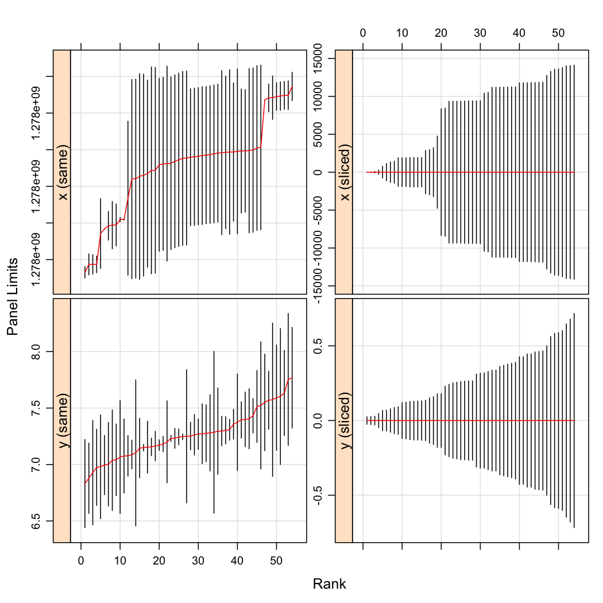
This plot orders the axis limits for both the x and y axes for both "same" and "sliced" (with sliced ranges centered around zero). This can help us to see if we will be squeezing the data for a lot of panels when using "same", and also helps identify outliers. In each of the panels of this plot, you can think of the range of the "Panel Limits" axis as the range that will ultimately be chosen for each panel for the given axis and limit method.
For this plot, it appears that slicing the axis limits does not buy us much resolution, and we know that for the time variable axis (x), we would like the limits to always be the same. Thus, we choose "same" for both axes.
To set our choice, we do the following:
# set limits from our prepanel calculations
coTimeLims <- setLims(coTimePre) # default is x="same", y="same"
makeDisplay() can take this object as is argument for lims and will set panel limits accordingly.
# create a display using axis limits from prepanel() and setLims()
makeDisplay(byLatLon,
name = "co_vs_time_lims",
group = "co",
desc = "Plot of co vs. time for each geographic 'square' with with fitted line, illustrating the use of 'same' axis limits for x and y by pre-specifying the axis limits using prepanel() and setLims()",
panelFn = coPanelFn,
lims = coTimeLims
)
Error: numbers of columns of arguments do not match
Setting the limits in your panel function
Another option, of course, is to set axis limits explicitly in your panel function.
Cognostics
Much of the power of the viewer for multi-panel displays (particularly when the panels number in the thousands or higher) lies in the ability to specify metrics that provide interesting information about each panel, with which you can filter, sort, and sample your collection of panels to look for those which are interesting. John Tukey called a notion similar to this "cognostics".
We can obtain cognostics for our panels by specifying a cogFn function to makeDisplay().
The cognostics function is applied to each subset just like the panel function and must return a list which can be flattened into a data frame. For our geographically split data, there are several cognostics we might be interested in. Typically the most useful cognostics are arrived upon iteratively. Here, we specify the number of observations in the subset, the slope of a fitted line to co vs. time, the mean latitude and longitude, and the range of the time variable.
# create a cognostics function to be applied to each subset
coCogFn <- function(x) {
slp <- coef(lm(co ~ as.integer(dat_ams), data=x))[2]
if(is.na(slp))
slp <- 0
list(
nobs = cog(length(which(!is.na(x$co))), desc="number of observations"),
slope = cog(slp, desc="slope of fitted line"),
meanLat = cogMean(x$latitude, desc="mean latitude"),
meanLon = cogMean(x$longitude, desc="mean longitude"),
timeRange = cogRange(as.integer(x$dat_ams[!is.na(x$co)]) / 60^2, desc="Time range (hours)")
)
}
The helper functions cog(), cogMean(), cogRange(), etc. can be used when defining the cognostics list. The most generic, cog() basically wraps the metric you want to compute with additional information, such as the description of the cognostic. They are not necessary but are helpful. For example, the difference between cogRange() and range() and others is that there is removal of NAs and extra checking for errors so that the cognostic calculation is robust.
Note that if you don't want to wrap your calculations in cog(), you don't have to, but doing so allows you to control the type of variable and give it a description.
Let's test the cognostics function on a subset:
# test the cognostics function on a subset
coCogFn(byLatLon[[1]]$value)
$nobs
[1] 2
$slope
[1] 0
$meanLat
[1] 38.38
$meanLon
[1] -121.3
$timeRange
[1] 0.003611
Now, let's add these cognostics to our display:
# add cognostics to the display
makeDisplay(byLatLon,
name = "co_vs_time",
group = "co",
desc = "Plot of co vs. time for each geographic 'square' with with fitted line, illustrating the use of 'same' axis limits and a cognostics function",
panelFn = coPanelFn,
cogFn = coCogFn,
lims = coTimeLims
)
Error: numbers of columns of arguments do not match
With this display, we can start to see the utility of cognostics. Pressing the "cog" button in the viewer brings up a table of cognostics with ways to sort and filter the panels based on the values of the cognostics. This is particularly useful when there are more panels than you could possibly view.
Panel Storage
The default behavior for how panels are stored is to store a reference to the ddo/ddf and then render the panels on-the-fly in the viewer, pulling the appropriate subsets from the data as necessary. Thus, if we have a very large ddo/ddf on HDFS, we do not make a copy for visualization, and only have to render the images being requested at the time of viewing. When calling makeDisplay(), only the prepanel and cognostics computations need to be done.
There is an option to pre-render, which can be useful when rendering the image is compute-intensive. However, this feature is still being developed and is currently not recommended.
Linking Displays
We typically have many different ways to look at the same division of data. When creating a display against a divided dataset, Trelliscope keeps track of the division of the input data, and all displays created on the same division can be linked together in the Trelliscope viewer.
To illustrate this, here we create a display with a panel function that, for each geographical subset, simply shows all of the airplane's tracks on the grid, with the grid location of the current subset highlighted in gray. We will see how this display can be useful when being viewed in conjunction with other displays in the following section.
# panel function for a geographical display
latLonPanelFn <- function(a) {
yy <- as.numeric(strsplit(gsub("\\(|\\]", "", attr(a, "split")$latCut), ",")[[1]])
xx <- as.numeric(strsplit(gsub("\\(|\\]", "", attr(a, "split")$lonCut), ",")[[1]])
xyplot(airplane$latitude ~ airplane$longitude,
groups=airplane$dat_ams < as.POSIXct("2010-06-28 21:00:00 UTC"),
panel=function(x, y, ...) {
panel.rect(xx[1], yy[1], xx[2], yy[2], col="darkgray")
panel.abline(v=lonCuts, col="gray")
panel.abline(h=latCuts, col="gray")
panel.xyplot(x, y, ...)
}
)
}
# test the panel function on a subset
latLonPanelFn(byLatLon[[2]]$value)
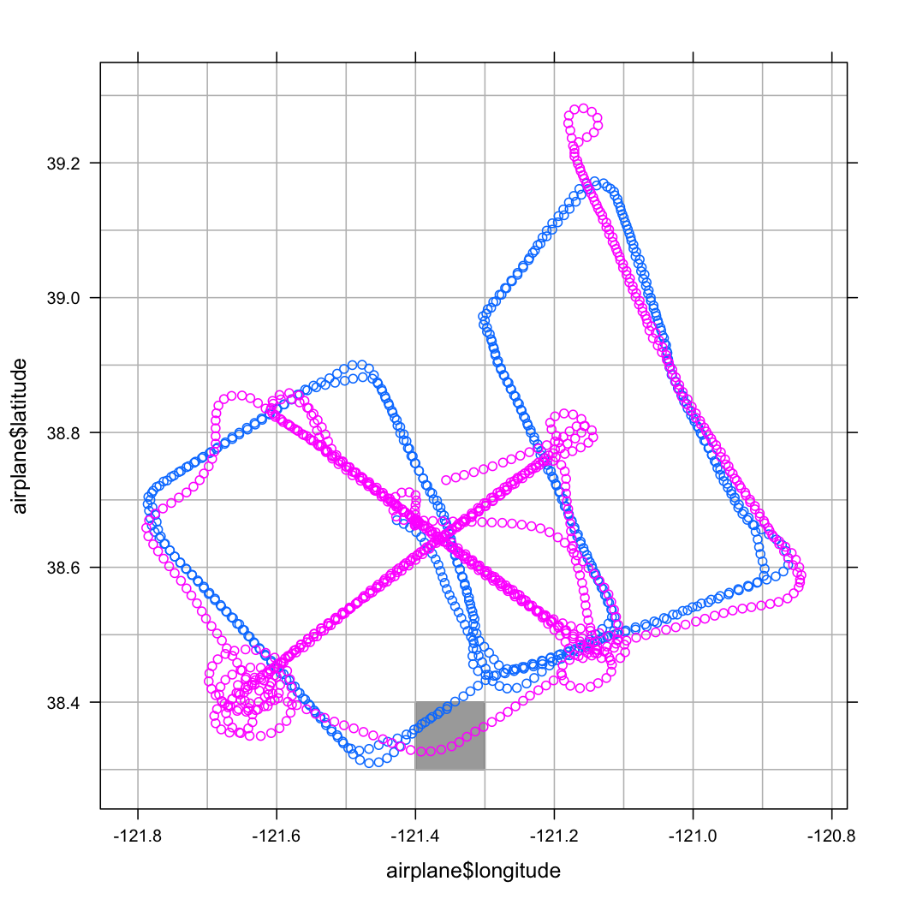
# create the display
makeDisplay(
data = byLatLon,
name = "lat_vs_lon",
group = "co",
desc = "airplane tracks",
panelFn = latLonPanelFn
)
Error: numbers of columns of arguments do not match
Note that the panel function uses data objects lonCuts and latCuts, data objects that are only visible in our local environment. makeDisplay() checks the panel and cognostics functions to detect locally stored data and attaches it to the display object so it will be available at the time of rendering.
Scatterplot Displays
Scatterplot matrices become increasingly infeasible as the number of variables grows beyond \(\approx\)10. Using trelliscope, we can create "scatterplot displays", where for \(p\) variables we create a panel for each of the \(\tbinom{p}{2}\) pairwise combinations. We can leverage research on "scagnostics" (scatterplot diagnostics, or cognostics for scatterplots) reference, which includes the R package scagnostics to identify interesting relationships. We have created a convenience function for doing this, splod() (scatterplot display). This function takes a data frame and creates a subset for the data for each pairwise combination of variables. The panel function is a simple scatterplot, and the cognostics function is a collection of scagnostics.
To illustrate this, we can create a scatterplot display for all of the variables in the airplane data. First, we call makeSplodDat() to get the data into the correct format:
# create data for scatterplot display
airplaneSplodDat <- makeSplodData(airplane,
id.vars=c("dat_ams", "flight", "datCut"))
This creates all pairwise groupings of variables not found in id.vars and puts them into a "ddf" object.
Here's an example of what a subset looks like:
# look at a subset of airplaneSplotDat
airplaneSplodDat[[1]]
$key
[1] "xVar=NO3|yVar=org"
$value
x y dat_ams flight altCut datCut
1 0.4490 9.263 2010-06-28 16:25:21 am (0,500] 06-28/16:15
2 0.5890 13.288 2010-06-28 16:25:34 am (0,500] 06-28/16:15
3 0.5356 12.134 2010-06-28 16:25:46 am (0,500] 06-28/16:15
4 0.5700 12.357 2010-06-28 16:25:59 am (0,500] 06-28/16:15
5 0.4567 10.112 2010-06-28 16:26:12 am (0,500] 06-28/16:15
...
We can now create a display for this with splod():
splod(airplaneSplodDat)
Error: numbers of columns of arguments do not match
This passes airplaneSplodDat to makeDisplay(), with the default name being the same as the name of the data passed in concatenated with "_splod", a default description of "Scatterplot display", a cognostics function that computes several scagnostics (see cogScagnostics()), and a default plotting function that simply plots one variable vs. another. You can override these and pass additional parameters to makeDisplay such as a custom cognostics function.
Syncing Files With the Web
Often our D&R environment is on a local workstation which is connected to a distributed computing backend. We might build up our VDB and web notebook locally and then desire to push the results to a web server which is running Shiny server. This is very useful for sharing analysis results with others.
There is some simple support for this in Trelliscope. You can initialize a web connection using webConn(), which assumes that your web server is a Linux machine to which you have passwordless ssh capability. You specify the address of the server, the directory of the VDB, and the name of the VDB under which you would like things stored.
# set up a web connection
wc <- webConn(user="rhafen", ip="glimmer.rstudio.com", appDir="~/ShinyApps", name="vdbexample")
Now we can sync our VDB with the web:
# sync files with the web server
websync()
Shiny Viewer
The Trelliscope viewer we have encountered throughout this document is a server-side web viewer that uses Shiny. Shiny basically provides a live R session running behind the web viewer, facilitating all of the interaction.
The viewer is a work in progress. There are many possible features.
Below we describe some of the components of the viewer.
Panel View
This is the main component of the viewer. Once you have selected a display to view, the panel view tiles the panels of the chosen display and allows you to page through them. Left and right keys or the buttons on the header bar page through panels. The text box at the top of the window specifies (approximately) how many panels to tile across the screen (exact number is based on the aspect ratio of the panels).
"View" Modal
Click the "view" button. You can specify which cognostics to display below each panel. The second tab, "plotFn" will let you change the plot function applied to each subset (this only works when storage is "localData"or"rhipeData"`.
"Cognostics" Modal
Here, you can sort and filter the panels based on their cognostics. Click the histograms to get an interactive histogram with which you can specify a range. On the multivariate selection row, click and drag table cells to specify all variables you want to do multivariate filtering on. If you choose 2 variables, you are given an interactive scatterplot on which you can select ranges to filter on. If you select more than 2 variables, you get a bivariate view of a projection pursuit to filter on (actual filtering in this case doesn't work right now). I need to give some more thought to making this interface optimal. The load, save, reset filter settings don't work right now. When you leave this modal, you go back to panel view with the panels arranged according to what you did in the cognostics panel.
Changing the Display
This is available as first menu item in the display button dropdown. It simply brings up a modal that lets you select a different display to view.
Adding a Related Display
Displays with the same set of keys can have their panels displayed together. (When a display is created, a hash is made of the sorted unique panel keys. If two displays have the same hash, it means that they have the exact same collection of panel keys).
As an example, change the display to "airTemp_vs_date". Then select "Add Related" from the "Display" button dropdown and select "lat_vs_lon". Now you can view the movement of the buoy in association with the time series plots, and filter these to explore whether the lat/lon binning looks valid.
Keyboard Shortcuts
There are some keyboard shortcuts for convenience:
- "c": open cognostics modal
- "v": open view modal
- "d": open display modal
- "r": open related displays modal
- esc: leave a modal and return to panel view
Cognostics Interactions
The current viewer is a proof-of-concept, and I'd like to see much more functionality here in the future. In particular, the following are interactive filtering / sorting behaviors we would like to see for each cognostics type:
- Numeric: filter / expore by univariate quantile plot / histogram - for groups of numeric variables, filter by scatterplot
- Factor (Categorical): filter / explore by dropdown of categories, frequency bar chart, regular expression input
- Date/time: filter / explore by time window slider, time of day, day of week, calendar range, regular expression input
- Geo: filter / explore by lat/lon projected onto map
- Relation: specified by a list of keys pointing to other subsets (within same dataset or in others) - filter / explore by node groupings in a network graph which might be organized or colored by other cognostics variables
- Hierarchy: a label that is found in a hierarchy specified externally to the record (in a separate metadata file) - filter / explore by treemap, etc.
Filters and interactivity based on combinations of cognostics would also be desirable, such as a numeric cognostic plotted versus a time cognostic as a time series, etc.
Scalable System
You can go through most of the examples we've seen so far in this tutorial with a simple installation of R and the Trelliscope package and its R package dependencies.
To deal with much larger datasets, scaling comes automatically with Trelliscope's dependency on datadr -- any backend supported by datadr is supported by Trelliscope. These currently include Hadoop and local disk.
Using data on localDisk as input
Here is a quick example of how to create a Trelliscope display using input data that is stored on local disk.
First, let's convert our in-memory byLatLon object to a "localDiskConn" object:
# convert byLatLon to a localDiskConn object
byLatLonLD <- convert(byLatLon,
localDiskConn(file.path(tempdir(), "byLatLon"), autoYes=TRUE))
Now, we simply specify this object as the input to makeDisplay():
# make display using local disk connection as input
makeDisplay(byLatLonLD,
name = "co_vs_time_ld",
group = "co",
desc = "Plot of co vs. time for each geographic 'square' with with fitted line, illustrating the use of 'same' axis limits and a cognostics function, with the data source being a local disk connection",
panelFn = coPanelFn,
cogFn = coCogFn,
lims = coTimeLims
)
The input connection is saved with the display object, and the data is used as the input when panels are rendered. If we want to pre-render the panels, we can specify an argument output, which can be any datadr data connection.
Using data on HDFS as storage and Hadoop/RHIPE as compute
To illustrate creating a display with data on HDFS, we first convert byLatLon to an "hdfsConn" object:
# convert byLatLon to hdfsConn
byLatLonHDFS <- convert(byLatLon,
hdfsConn("/tmp/byLatLon", autoYes=TRUE))
Since we will be pulling data at random by key from this object, we need to convert it to a Hadoop mapfile using makeExtractable() (datadr tries to make things mapfiles as much as possible, and makeDisplay() will check for this and let you know if your data does not comply).
# make byLatLonHDFS subsets extractable by key
byLatLonHDFS <- makeExtractable(byLatLonHDFS)
Now, to create the display:
# make display using local disk connection as input
makeDisplay(byLatLonHDFS,
name = "co_vs_time_hdfs",
group = "co",
desc = "Plot of co vs. time for each geographic 'square' with with fitted line, illustrating the use of 'same' axis limits and a cognostics function, with the data source being a HDFS connection",
panelFn = coPanelFn,
cogFn = coCogFn,
lims = coTimeLims
)
R Code
If you would like to run through all of the code examples in this documentation without having to pick out each line of code from the text, below are files with the R code for each section. All but the final section on scalable backends should run on a workstation with no other dependencies but the required R packages. The scalable backend code requires other components to be installed, such as Hadoop or MongoDB.